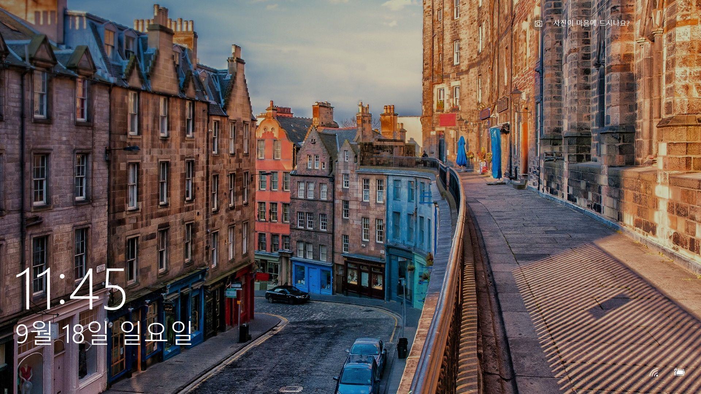
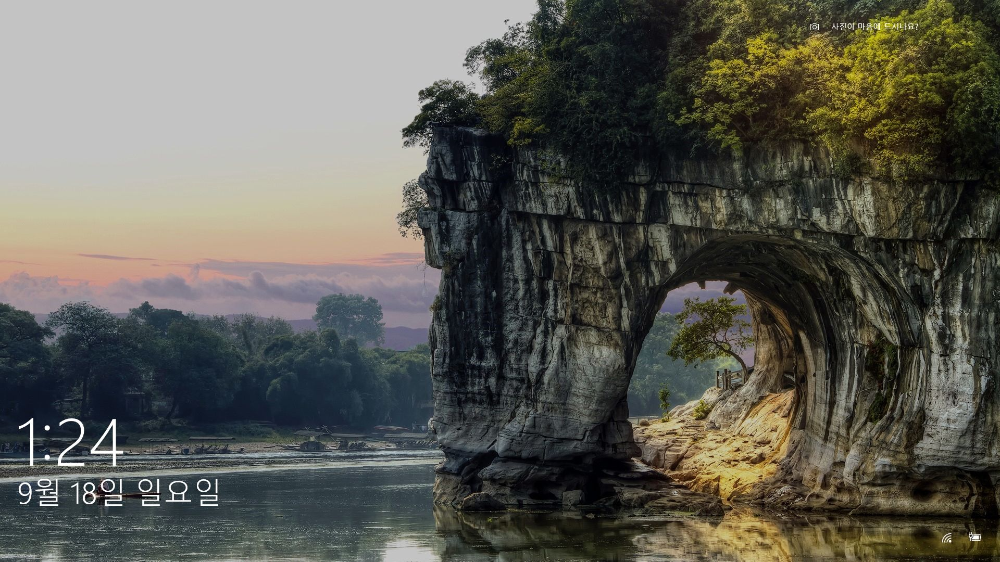
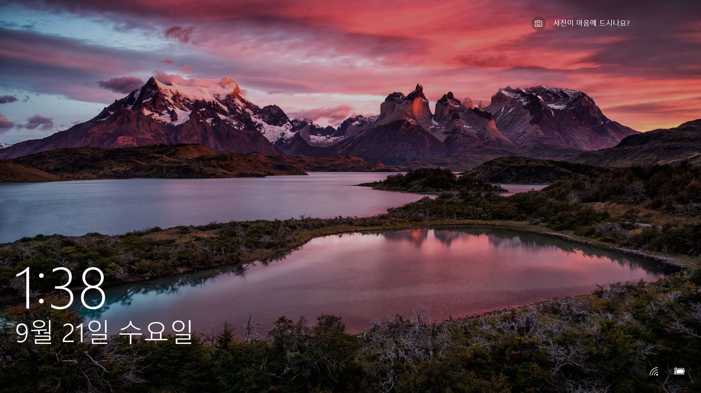
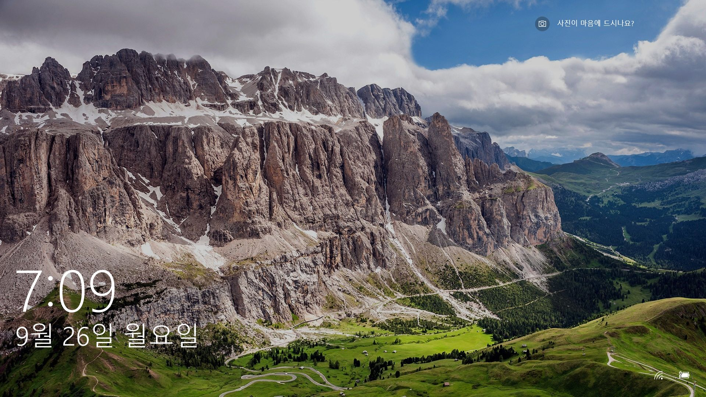
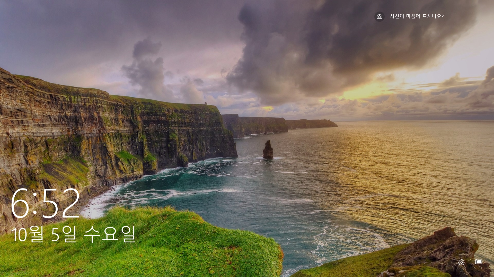
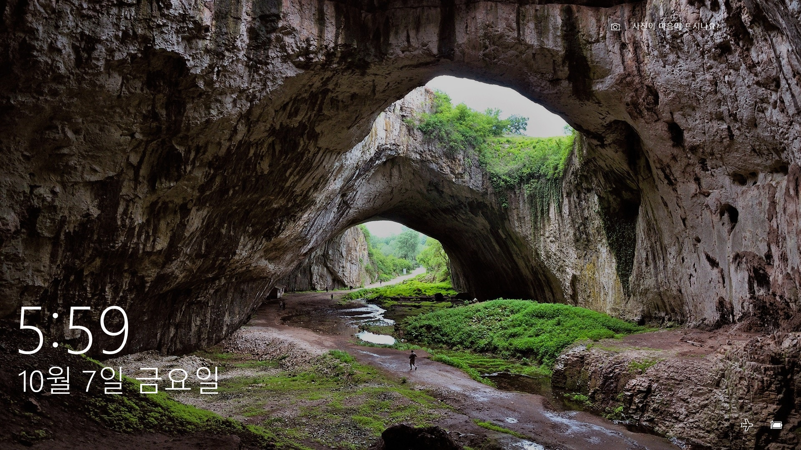
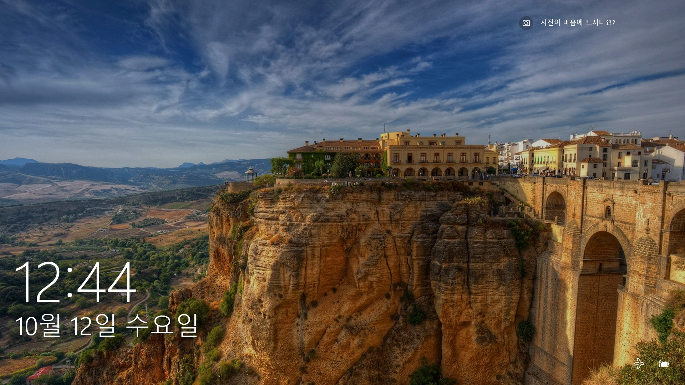

윈도 10을 사용하면 대기 화면이 계속 멋진 사진으로 채워지는 것을 볼 수 있다. 궁금해서 구글신에게 물어봤다. 도대체 이 사진은 어딘가요?




http://www.valgardena.it/en/val-gardena/villages/selva-val-gardena/


https://en.wikipedia.org/wiki/Devetashka_cave
